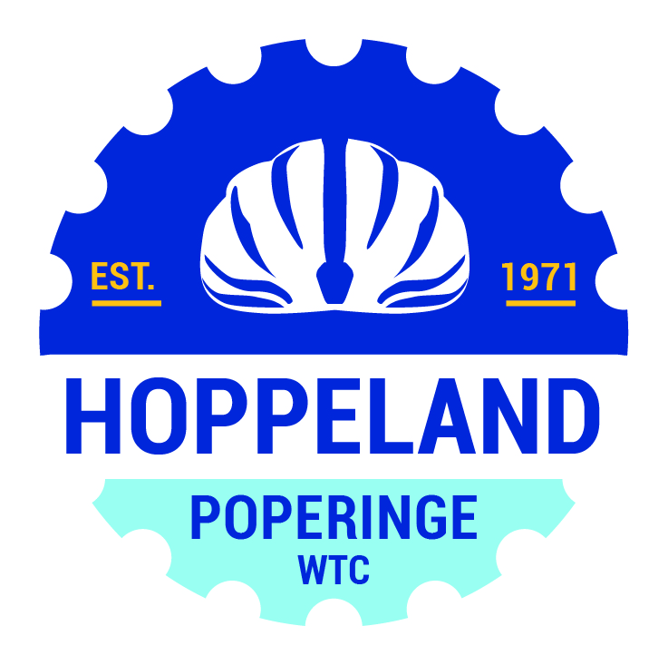

HUISHOUDELIJK REGLEMENT

Artikel 1:
De leden nemen op vrijwillige basis deel aan de activiteiten van de vereni-ging en door hun lidmaatschap verklaren zij zich automatisch akkoord met het huishoudelijk reglement, ons algemeen reglement en onze GDPR-regelgeving. De raad van beheer kan het lidmaatschap weigeren zonder dat daarvoor een reden dient opgegeven te worden.
Artikel 2:
Het lidgeld bevat de administratiekosten en de deelname aan de gewone activiteiten. Voor bepaalde activiteiten kan een bijkomend bedrag gevraagd worden.
Het lidgeld is ondeelbaar en kan niet teruggevorderd worden. Het niet betalen van het lidgeld heeft automatisch het ontslag als gevolg.
Artikel 3:
Elke deelnemer wordt verondersteld medisch in orde te zijn, deel te nemen aan de activiteiten met materiaal in goede staat en over een goede verzeke-ring tegenover derden te beschikken.
Artikel 4:
De deelnemers worden geacht de wegcode strikt na te komen en de instruc-ties van de wegkapiteins op te volgen.
Deelnemers die zich aan de vertrekplaats of na een tussenstop tijdens de tocht aanbieden onder invloed van alcohol, stimulerende of verdovende mid-delen, zullen geweigerd worden deel te nemen of verder deel te nemen, zonder recht op eventuele terugbetaling van de deelnamekosten of andere schadevergoeding.
Artikel 5:
Elk lid moet zich van de clubuitrusting voorzien en deze dragen ter gelegen-heid van de gezamenlijke ritten.
Artikel 6:
Bij gezamenlijke uitstappen gedraagt elk lid zich voornaam met respect voor de andere deelnemers, weggebruikers en de natuur.
Artikel 7:
De wielertoeristenclub of de raad van beheer draagt niet de minste aanspra-kelijkheid en kan nooit aansprakelijk gesteld worden bij hetzij welke fout ook door één van zijn leden begaan, of bij om het even welk ongeval, fout of acti-viteit. De clubleden kunnen dan ook nooit de wielertoeristenclub of de raad van beheer verantwoordelijk stellen.
Artikel 8 :
Bij het niet naleven van het inwendig reglement kan de raad van beheer sancties opleggen met eventuele verwijdering uit de club als gevolg.
Oprichtingsakte en recentste statuten van de Vereniging zonder winstoog-merk 'Wielertoeristenclub Hoppeland' zijn verschenen in het Belgisch Staats-blad op 6 januari 2022.
ALGEMEEN REGLEMENT WTC Hoppeland vzw
Je wordt lid van WTC HOPPELAND vzw na:
- het afsluiten van de verzekering bij de Vlaamse Wielrijdersbond (VWB);
- het aanschaffen van de clubkledij;
- het vereffenen van het lidgeld van WTC HOPPELAND vzw.
Er wordt € 2,00 per rit, bij inschrijving voor het volgende seizoen, terugbe-taald als er minimaal aan 10 ritten deelgenomen wordt.
Er wordt maximaal € 40 ,- per jaar terugbetaald, wat overeenkomt met deel-name aan 20 ritten.
Voor 65-plussers wordt iedere rit in rekening gebracht met ook voor hen een maximum van 20 ritten.
De ritten worden hoofdzakelijk op zon- en feestdagen ingericht, uitzonderin-gen zijn de daguitstap en de meerdaagse.
Zijn toegelaten tot de uitstappen:
- leden van WTC HOPPELAND vzw;
- zij die eerst 1 of 2 oefenritten willen meerijden vooraleer in te schrijven.
Een geldige rit bekom je door:
- persoonlijk het startblad af te tekenen, dit kan vanaf 15 tot 5 min. vóór
vertrek;
- de kledingregels te respecteren, dit houdt in dat:
- je een helm draagt;
- alle zichtbare kledij de gesponsorde clubkledij is;
- samen met de groep te vertrekken en aan te komen voor ons lokaal.
- het respecteren van ons huishoudelijk reglement.
Wie zich inschrijft (door betaling van het clublidgeld) bij WTC HOPPELAND vzw verklaart zich akkoord met:
- ons Algemeen reglement;
- ons Huishoudelijk reglement;
- onze GDPR - regels.
Deze zijn terug te vinden op onze website en ieder lid wordt verondersteld deze te kennen en na te leven.
RITTEN
De ritten worden gereden met een A-, B- en C- groep.
De grootste groep wordt gevolgd door de volgwagen.
Aangezien we vooraf niet weten welke groep de grootste zal zijn, zorgt iedereen telkens voor zijn eigen reservemateriaal. Volgt de volgwagen, dan wordt indien mogelijk, enkel het clubreservemateriaal gebruikt.
Alle groepen vertrekken op hetzelfde ogenblik op de afgesproken locatie.
Dit is hoofdzakelijk aan ons lokaal, zo niet wordt dit vooraf gemeld.
Bij iedere rit staat het startuur vermeld. Begin seizoen starten we om 9u, vanaf ongeveer half april is dit meestal om 8u30.
Alle groepen vertrekken op het zelfde uur en beëindigen de rit aan de meegedeelde locatie zoniet volgt het bestuur het geldend clubreglement (zie verder).
Bij mistig weer kan het bestuur beslissen om een voorziene rit in Frankrijk te vervangen door een alternatieve rit.
De data waarop gefietst wordt zijn terug te vinden op de website.
Op de website staan eveneens per rit vermeld:
- afstand A-groep (richtgevend, niet bindend op de km);
- vertrekuur;
- speciale vertreklocatie;
- wagenbestuurder;
- GPS-bestand van de rit.
A-, B- en C- GROEP
Iedereen die deelneemt aan een clubrit is zelf verantwoordelijk voor zijn eigen veiligheid en voor de veiligheid van zijn medefietsers. Dit houdt in dat je bij het oversteken van kruispunten, je er zelf ook nog op toeziet dat dit op een veilige manier kan gebeuren.
Als club zorgen we voor een volgwagen (zie verder) met reservemateriaal. Deze volgt de grootste groep. Als je de volgwagen meehebt, dient er bij pech, als er passend reservemateriaal voorhanden is, verplicht een reser-vewiel van de club gebruikt te worden. Indien bij geval van pech dit reser-vemateriaal niet wordt gebruikt, wordt er niet gewacht door de groep en wordt dit aanzien als achterblijven zonder reden.
In iedere groep is er een verantwoordelijke (al dan niet bestuursleden). Deze baankapiteins bevelen de groep, om het even waar zij zich in de groep be-vinden. Het staat ze vrij om af te wijken van de opgegeven weg. Via de op-gegeven ritten kun je volgen welke richting we uitgaan. Zij streven er naar het tempo naar godsvrucht en vermogen te regelen, zorgen ervoor dat de wegcode wordt nageleefd en stellen de eventuele overtredingen vast.
In geval van pech, wacht heel de groep. “Samen uit, samen thuis” is een heel belangrijke clubeigenschap voor het bestuur!
A- groep:
Dit is de hoofdgroep. Zij rijden de ritten met een gemiddelde snelheid van 26 à 30 km/u onder begeleiding van wegkapiteins. De snelheid is afhankelijk van het parcours en de weersomstandigheden.
Hou rekening met de seingevers zodat zij na het afzetten van een kruispunt vlot en veilig terug hun plaats kunnen innemen.
B- groep:
Deze groep rijdt met een gemiddelde snelheid van 30 à 33 km/u een grotere, alternatieve rit in ongeveer dezelfde richting als de A-groep. Zij blijven de ganse rit in één groep rijden.
C- groep:
Deze groep rijdt met een gemiddelde snelheid van 22 à 26 km/u een alternatieve rit in ongeveer dezelfde richting als de A-groep. Zij blijven de ganse rit in één groep rijden.
DE WAGENBESTUURDER
Bij de opmaak van de ritten voor het nieuwe seizoen worden de chauffeurs alfabetisch, doorlopend over de jaren, aangeduid. (Met het huidige aantal leden is iedereen 1 maal om de 2 à 3 jaar aan de beurt).
In het begin van het seizoen wordt iedere aangeduide wagenbestuurder via mail op de hoogte gebracht wanneer hij of zij dient te volgen met de wagen. Dit wordt ook weergegeven op de website.
Het staat de leden vrij om zelf onderling te wisselen. De aangeduide persoon zorgt er enkel voor dat de volgwagen kan meerijden. Hij of zij rijdt zelf of zorgt ervoor dat iemand anders als chauffeur optreedt.
De wagenbestuurder dient minimum 21 jaar te zijn en te beschikken over een geldig rijbewijs. Voor de ritten waarbij we pas in de namiddag terug zijn, zorgt het bestuur zelf voor een wagenbestuurder.
We rekenen op jullie medewerking, aangeduid kunnen zijn als wagenbestuurder is één van onze clubreglementen en dient zodoende gevolgd te worden.
Wie niet komt opdagen als wagenbestuurder kan het ganse seizoen niet genieten van geldige ritten.
Hij komt het volgende seizoen automatisch één van de eerste ritten terug aan de beurt.
Wie opnieuw niet aanwezig is, wordt niet meer toegelaten op de ritten en is niet meer welkom bij WTC HOPPELAND vzw.
BOETES
- vóór de baankapitein rijden → rit komt te vervallen
- achterblijven zonder reden → rit komt te vervallen
- alleen aankomen aan 't lokaal → 2 ritten komen te vervallen
- niet tijdig terugbezorgen van reservewiel → 2 ritten komen te
vervallen
- het goede voorkomen van de club beschadigen → minimaal 1 rit komt te vervallen
- niet komen opdagen als wagenbestuurder → zie paragraaf (wagenbestuurder)
Het bestuur kan steeds bijkomende boetes opleggen naargelang het vastgestelde feit.
KAMPIOENENVIERING
Wie het meeste deelgenomen heeft aan de officiële uitstappen wordt kampioen, 2de en 3de geklasseerde vallen eveneens in de prijzen.
Degenen die 20, 25, 30, 35, 40, 45 of 50 jaar onafgebroken lid zijn, worden gehuldigd.
De geschenken worden enkel tijdens de kampioenenviering uitgedeeld.
PRIVACY VERKLARING PERSOONSGEGEVENS
Deze hebben we nodig om:
- uw lidmaatschap bij de VWB en de bijhorende verzekering in orde te brengen;
- jullie de nodige nieuwsbrieven en info in verband clubactiviteiten te bezorgen;
- uw naasten te kunnen verwittigen bij een eventuele noodsituatie.
Deze worden nooit doorgegeven aan derden.
Enige uitzondering hierop is het deelnemen als club aan een rally.
Hier worden van alle leden de naam, voornaam en het rijksregisternummer (= lidnummer VWB) doorgegeven.
Wat wordt er verzameld en bijgehouden per lid:
- Naam en voornaam;
- Adres;
- Telefoonnummer(s);
- Mailadres(sen);
- Geboortedatum;
- Rijksregisternummer.
- Noodcontactpersoon (ICE):
- Naam en voornaam;
- Telefoonnummer.
Wie heeft toegang tot deze gegeven:
- de secretaris:
- de voorzitter.
Zij houden deze bij gedurende je volledige lidmaatschap en bewaren dit nadien in de clubarchieven (voor latere jubilea) waar zij toegang tot hebben.
De bestuursleden kunnen de laatste 10 jaar inkijken zolang hun mandaat loopt.
BEELDMATERIAAL
Tijdens activiteiten georganiseerd door WTC HOPPELAND vzw worden er soms foto’s of ander beeldmateriaal gemaakt.
Dit beeldmateriaal kan gebruikt worden op onze sociale media, op onze website, of tijdens het ledenfeest.
Foto’s en ander beeldmateriaal blijven te allen tijde eigendom van WTC HOPPELAND vzw.
.